lChapter 5
Analysis
Voice science has provided a wealth of information about the voice and its function, much of which is directly applicable to artistic singing. Research into acoustics and biomechanics—including issues of breath pressure and airflow—have been particularly important. This chapter will explore some of the ways this information trickles down to singers and teachers for practical use in the voice studio.
Acoustic voice analysis might have originated in the scientific community, but it certainly has not remained exclusively in that domain. Thanks to the pioneering work of prominent pedagogues, including William Vennard, Ralph Appleman, and Richard Miller, analysis has become an important, accessible tool for singers and their teachers. Analysis instruments, such as oscilloscopes and spectrum analyzers, formerly were found only in well-funded laboratories. But the personal computer has changed everything. With appropriate software, an inexpensive PC[1] becomes a comprehensive analysis station—something that would have cost tens of thousands of dollars less than a generation ago. Ordinary singers and teachers are now able to see the voice using programs and technology that are affordable and accessible. Indeed, if you can write an e-mail or log on to Facebook®, your technical savvy is sufficiently advanced to use and understand many of these tools.
Voice laboratories that include sophisticated analysis instruments are increasingly common in music schools around the world,[2] many of which have capabilities extending well beyond acoustics. Vocal fold vibration can be examined noninvasively through a process called electroglottography. Breath support can be evaluated through inductive plethysmography, which calculates the range of motion in the thorax and abdomen during respiration, and electromyography, which measures electrical activity in individual muscles during their contraction. Aerodynamic systems are available to measure airflow and the subglottal air pressure required to initiate phonation (reliable ways to measure subglottal pressure during phonation are more invasive). Nasality can be quantified through airflow and acoustic measures. Hybrid instruments even exist that are able to explore acoustics, airflow, and vocal fold movement simultaneously. While most of these instruments are beyond the fiscal means of individual singers and teachers, a respectable voice lab can be set up in an institution for no more than the cost of a typical computer, music theory, or piano lab.
Computerized voice analysis is not a panacea. No matter how fast the computer or how complex the programming, it is unlikely ever to surpass the human ear and brain. A computer can help its user understand what is happening in a voice; it cannot, however, tell if the sound is beautiful or musical. It is this author’s opinion that voice analysis is best viewed as a teaching aid, much like an audio or video recorder. Just as no one has ever learned to sing solely by listening to recordings of his voice, no one will learn to sing solely by looking at a computer monitor!
Acoustic analysis transforms sound from the aural to the visual realm. Much like prisms refract light into the colors of the rainbow, analysis instruments divide sound into its component parts: overtones and noise. The result is an objective representation of what once existed only in the subjective realm. Timbre can be visualized and quantified. The singer’s formant can be located and measured for frequency and amplitude. The relative amplitudes of the first vowel formant and the singer’s formant can be analyzed to help create a beautiful chiaroscuro tone. Legato, vibrato, and changes in musical dynamics can be visualized and used as biofeedback in teaching.
Voice analysis examines two types of events: periodic and aperiodic. Periodic events are those with measurable frequency, including the fundamental, harmonics, and vibrato. Aperiodic events include noise, sonance (e.g. the sound of inhalation), subharmonics, and other imperfections in vocal sound.
Almost all acoustic voice analysis is based on the Fast Fourier Transform (FFT). The FFT is a mathematical algorithm that converts sound into its component parts. Computers complete this computation so quickly that it appears to happen in realtime (no delay between input and output). FFT is the basis for analysis instruments such as the power spectrum and spectrogram, which will be discussed later in this chapter.
There is little need for most singers and teachers to understand the mathematical underpinnings of the FFT—this chapter focuses on the information provided by the FFT, not on how it produces its results. Those who are particularly curious can find additional information via the Internet (the Wikipedia entry for FFT is quite good), or from publications cited in the References section of this chapter.
Data collection and analysis occurs in three stages. The first step is conversion of the analog electrical signal produced by a microphone into a digital signal that can be interpreted by the computer. This is done either by the computer’s sound card or by an external analog to digital (A/D) signal processor,[3] which might be called an audio interface. A computer program processes the signal, performs the FFT, and analyzes the results. In the final step, these results are plotted on a graph that is displayed on the computer monitor.
Many analysis programs record and store the digitized audio signal prior to analysis. This offers the advantage of saving sound samples for retrieval and examination at a later date, which is particularly useful in research and in tracking change over time. As a teaching tool, however, it offers little pedagogic advantage over a tape recorder because feedback is provided after, not during, singing. Other analysis instruments are able to display information in realtime, eliminating the delay imposed by recording. These instruments have much greater use in teaching. Functioning as biofeedback devices, they permit students to witness the effects of technical changes as they happen. Most realtime instruments also are capable of saving data for subsequent retrieval and reanalysis.
Analysis instruments and programs come in a wide variety of formats. Rudimentary examples can be downloaded for little or no cost from the Internet; few of these programs are designed specifically for voice analysis, but they still can be useful. Programs written specifically to look at the voice can range in price from relatively modest to prohibitively expensive. Increased cost usually is accompanied by more accurate acquisition, digitalization, and analysis of the audio signal, additional display options (such as 3-D plotting of spectrograms), and voice-specific analysis options such as formants, vowel plotting and perturbation assessment.
The remainder of this chapter will focus on specific types of voice analysis and the manner in which they might be used. Most examples were created using VoceVista Professional (Visualization Software, LLC), and the Computer Speech Lab (Kay-Pentax).[4]
Acoustic Measures
Audio Waveform
At this point, the only audio waveform that has been seen in this book is the pure sine wave. The complex sounds produced by the voice are very different (remember, a sine wave represents a pure fundamental tone with no overtones). Waveforms displayed by the computer are complex and are created by transforming the acoustic energy of sound into electrical energy. The wavy line that results shows the variation in compression and rarefaction within a single period or over a series of periods (Figure 5-1).
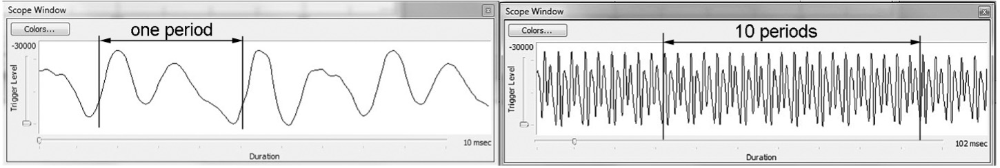
Figure 5-1: Audio waveform detail
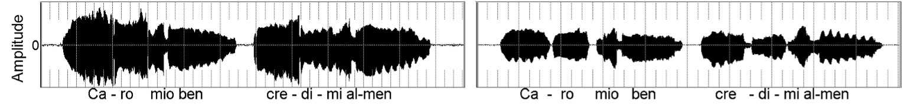
Figure 5-2: Audio waveform, legato & non-legato
An audio waveform display has limited use as a feedback tool in teaching; at best, it might assist with control of legato and loudness. Figure 5-2 illustrates how this can occur with excerpts from Pergolesi's Se tu m'ami (5/1). The image below is not a “Rorschach” test—the strange-looking blobs show the amplitude of the sound above and below the point of zero energy. Non-legato connections are apparent as gaps or spaces. Vibrato can sometimes be seen through the periodic “spikes” that poke out from the top and bottom of the images.
Media 5/1: Audio waveform
Fundamental Frequency
Many analysis programs are able to extract the fundamental frequency from the complex waveform and plot it as a line or a series of points on a graph (5/2). When performed in realtime, this might provide valuable feedback to help correct poor intonation; however, the presence of vibrato in a singer’s voice combined with the poor frequency resolution often found with these displays can limit its efficacy.
Media 5/2: Analysis of fundamental frequency
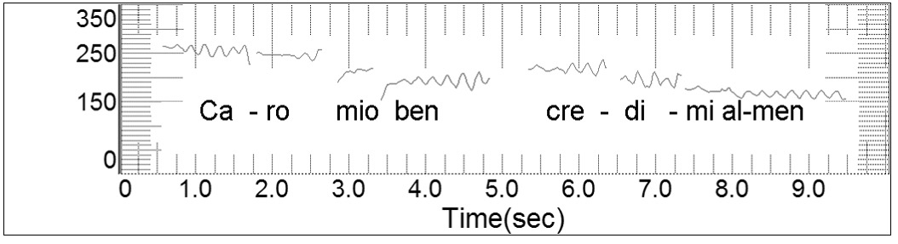Figure 5-3: Pitch extraction from the audio file
A better tool to help with this problem is found in rudimentary frequency counters or musical tuning programs, many of which can be found for little or no cost on the Internet. An excellent example is found in the program Sing & See, published by CantOvation Ltd., which is one of the few programs available for both PC and Mac (Figure 5-4) (http://www.singandsee.com/index.php).
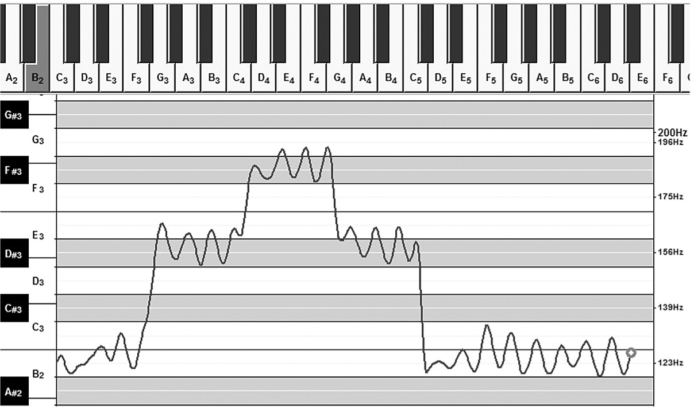
Figure 5-4: Pitch extraction with "Sing & See"
One noteworthy use of fundamental frequency extraction is as a tool to help develop good speech prosody (inflection). Through visualization of pitch, monotonal speakers often quickly can achieve a healthier and more pleasing pitch modulation. Some analysis programs provide special features to assist with this function, including the Realtime Pitch module for the CSL/Multi-Speech platform from Kay-Pentax.
Amplitude (intensity)
Many analysis programs are able to extract and measure the amplitude of sound (Figure 5-6). For absolute measurement, which shows the precise sound pressure (dB) level, the instrument must be calibrated to an external reference. Without calibration, measurement is relative; the difference between elements in the signal will be accurate (e.g. 10dB falloff from 2Fo to 3Fo), but the readings will not necessarily match those of a sound level meter.
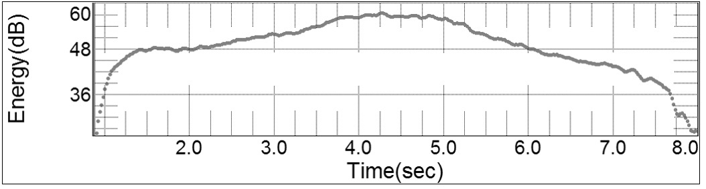
Figure 5-6: Amplitude analysis of messa di voce (crescendo/diminuendo)
Programs that use relative amplitude arbitrarily place a reading of 0dB at some point on the scale. This practice can be a bit confusing until you understand what is happening. For example, VoceVista places the 0dB reference at the top of the scale (Figure 5-7). The amplitude of components in the signal (e.g. harmonics) is indicated through negative numbers that express the distance below the reference point; this means a harmonic that is measured at -50dB actually is stronger than one that reads -75dB. Programs from Kay-Pentax use an arbitrary 0dB reference that results in both positive and negative readings for amplitude. This system requires a bit more arithmetic at times, especially if you are trying to find the difference between harmonics with mixed readings, such as 40dB and -15dB. If you experience this conundrum, just remember that to find the difference between a positive and negative number, you add them together, disregarding the negative sign. Remember: any time you see amplitude expressed as a negative number, you are looking at relative, not absolute measures.
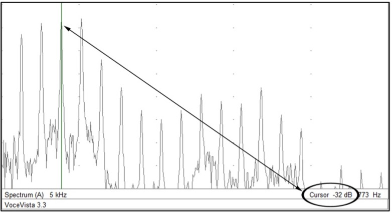
Figure 5-7: Amplitude expressed in negative numbers (-32dB)
Some programs can generate simultaneous analyses of fundamental frequency and amplitude, which is useful in visualizing pitch-induced amplitude changes. Many singers have technical issues with high notes, often related to excess pressure and effort. A realtime amplitude and frequency display can help resolve this problem. The student sings a scale or arpeggio from low to high and back, striving to maintain consistent amplitude (Figure 5-8). He quickly sees that high notes almost always get louder (5/3). Using feedback from the program, he probably will discover that singing the top more easily, at a volume that matches the lower pitches, actually results in a freer sound than when he pushes for extra loudness.
Media 5/3: Unintentuional crescendo to higher pitches
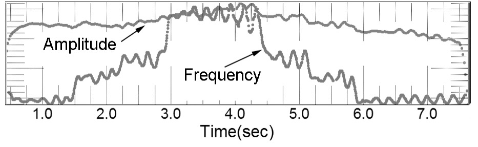Figure 5-8: Combination display of Fo and dB
Dual displays of frequency and amplitude also are useful for assessing vibrato. In some voices, vibrato is dominated by frequency modulation; in others, amplitude changes dominate. Ideally, we look for synchronous movement of the two factors (Figure 5-9).
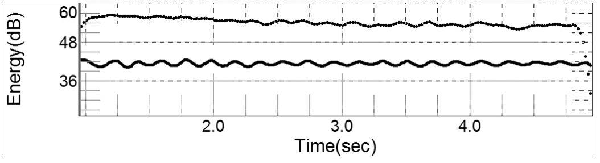
Figure 5-9: Vibrato analysis. Amplitude change is seen on the top line;
frequency change is shown on the lower line
A computer is not the only way to provide amplitude feedback for a student. Sound meters are available from many consumer electronics stores for a modest price. Many of these devices are factory-calibrated and have a high level of accuracy.
Power Spectrum (FFT)
A power spectrum performs the Fourier Transform on an input signal and plots the results through a line or bar graph, allowing the components of a complex soundwave to be seen (amplitude and frequency of the fundamental and overtones). In a typical power spectrum, frequency is plotted on the horizontal (X) axis and amplitude is plotted on the vertical (Y) axis (Figure 5-10, 5/4).
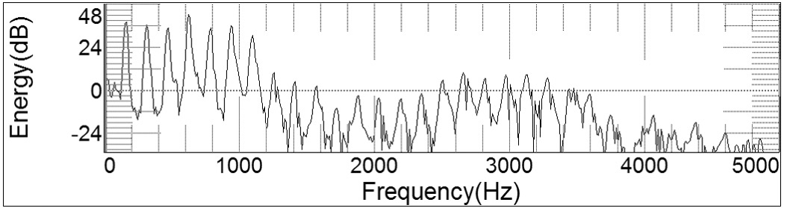
Figure 5-10: Power spectrum
Media 5/4: Power spectrum
Power spectrum analysis shows the content of sound during a single moment in time, which might be as short as a few milliseconds or as long as several hours (length is restricted by the processing power and sampling limitations of the analysis device). When the time period is extended to include several cycles of vibration, the resulting analysis is called a long-term average spectrum (LTAS). LTAS was used to generate the displays in the formants portion of this text that show the average acoustic output of a symphony orchestra and a tenor (Figure 4-21).
An analogy might prove helpful in understanding aspects of a power spectrum. When viewed in realtime, the analysis is like a movie; it consists of individual frames that knit together to form a seamlessly moving image. When you view a still image of a power spectrum, it is like viewing a photograph or a single frame from a movie. Long term average spectrum is like a photograph taken with a long exposure time.
Used as a feedback tool, power spectrum analysis can only display the sound that leaves a singer’s mouth; it cannot separate the source from the filter and therefore cannot directly show the locations of formants. The action of formants, however, is easily inferred by looking at the relative strength of elements in the spectrum; harmonics that are stronger than others almost certainly have been amplified by a formant (5-5). You can’t see the actual formant, but you can see its impact on the sound (Figure 5-11).
Media 5/5: Power spectrum showing harmonics interacting with formants
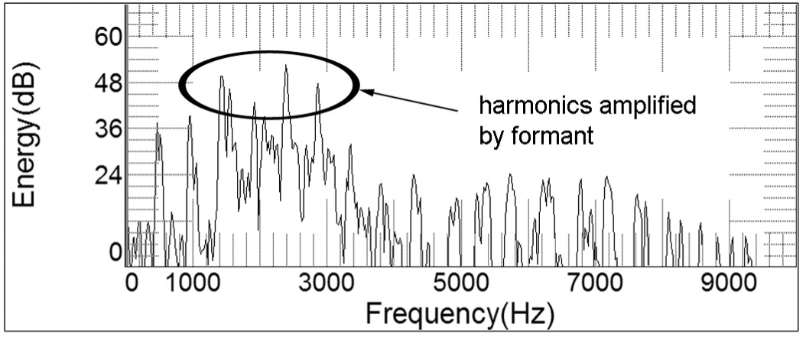Figure 5-11: Harmonics amplified by a formant
Formant locations can more easily be inferred in an FFT analysis through the use of vocal fry or an electro-larynx, a device used by people who have had their larynx surgically removed (5/6). In both of these cases, there is a low fundamental frequency followed by a large number of overtones; as a result, formants emerge from the FFT spectrum in great detail (Figure 5-12).
Media 5/6: Electro-larynx
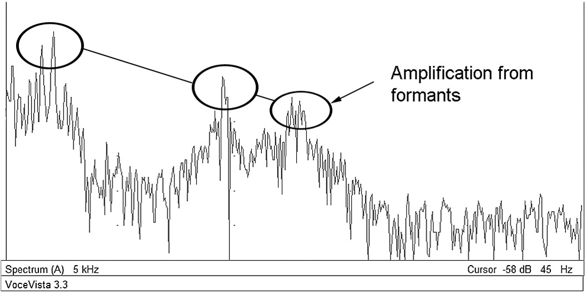Figure 5-12: Vocal fry used to locate formants
Spectrogram
Spectrograms add the dimension of time to acoustic analysis. The graphic display is a bit like a power spectrum turned on its side (Figure 5-13). Frequency now appears on the vertical (Y) axis and time appears on the horizontal (X) axis. Amplitude is shown by color change (grayscale or color).
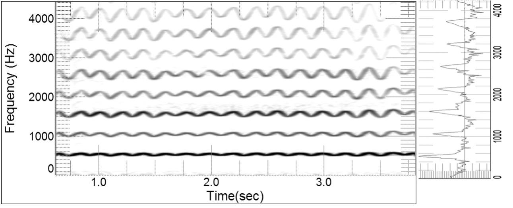
Figure 5-13: Spectrogram with power spectrum that is rotated 90 degrees
Spectrograms may either be wideband or narrowband[5] (some programs also provide a middle-band option). Narrowband spectrograms divide the frequency spectrum into small segments, allowing clear visualization of harmonics and time-related vocal events such as vibrato. Wideband spectrograms divide the frequency spectrum into broad swaths; individual harmonics are obliterated but the total bandwidth of formants is more readily visible. Wideband spectrograms also provide high resolution in the domain of time, in some cases allowing acoustic visualization of each opening and closing cycle of the glottis (Figure 5-14).
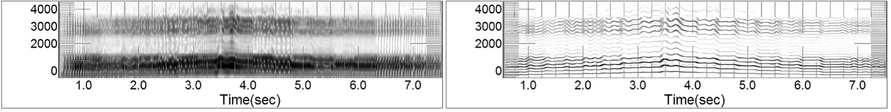
Figure 5-14: Wideband (left) and narrowband spectrograms
Spectrogram Application
Students acquire knowledge in different ways. Some are kinesthetic learners who cannot accomplish a task until they know what it feels like in their bodies. Others are intellectual learners who must understand the concepts before they can be put into action. Still others learn aurally, responding best to modeling from the teacher. Many students, however, are visual learners; they must see it to do it. Feedback from realtime spectrograms is ideally suited to these visual learners. Teachers must remember that the current generation of students does not remember a world without computers. For them, receiving information from a display screen is familiar and normal.
Unfortunately, spectrographic feedback tends to be more effective for male than female voices. The reason is simple: men almost always sing in a frequency range that permits a large number of harmonics to be visible on the spectrographic display. Women, however, generally sing much higher. At times, only three or four harmonics might be seen, as demonstrated by Figure 5-15 (5/7), which shows the same phrase sung by a baritone and a soprano. Notice that the spatial separation between harmonics is greater for the soprano and that fewer harmonics always are visible.
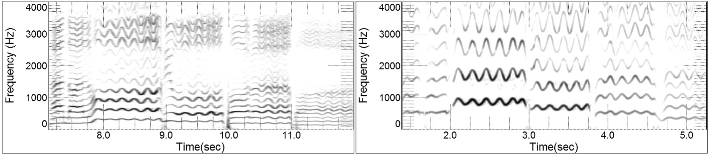
Figure 5-15: Baritone and soprano singing the same phrase, one octave apart
Media 5/7: Distribution of harmonics because of octave displacement
Spectrogram use is further complicated by linear frequency displays. This can be particularly troubling for musicians, who are accustomed to thinking in terms of pitch, rather than frequency. A spectrogram displaying a frequency range of 0-5,000Hz, for example, includes pitches extending to E8-flat (a minor third above the highest note of the piano). The midpoint of this display is 2,500Hz, E7-flat, which is the highest E-flat on the piano keyboard. Eight musical octaves are squeezed into the bottom half of the display; a single octave occupies the top half!
Some programs, including Gram (Visualization Software) and CSL (Kay-Pentax), offer a solution to this problem through an option to display frequency logarithmically. Using this system, harmonics are spatially separated like their equivalent musical intervals (Figure 5-16, 5/8). Many musicians find this type of display to be more intuitive.
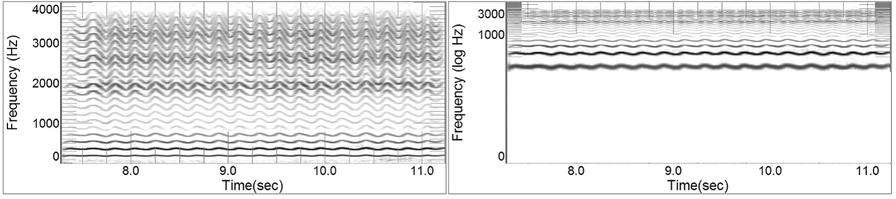
Figure 5-16: Linear and logarithmic frequency displays
Media 5/8: Spectrogram with logarithmic frequency
While realtime spectrograms can be used in many ways during voice instruction, in my experience, five applications are most important: control of vibrato; control of legato; monitoring the strength and bandwidth of the singer’s formant; monitoring elements of diction, including the duration of consonants, and the length of diphthongs (both intentional and accidental); and verifying the pitch accuracy of vocal onsets and releases.
Control of Vibrato
Vibrato is an important stylistic feature of singing in the Western, classical model. Most singers strive to allow their vibrato to remain uniform and consistent at all times, regardless of pitch or loudness. Vibrato easily is seen using narrowband spectrograms. When it is present, the harmonics appear to wiggle in a nearly sinusoidal pattern. This movement is most apparent in the higher harmonics where large changes of frequency only result in small changes of pitch. If vibrato is absent, harmonics will look like flat lines, not unlike the EKG tracings of someone whose heart has stopped beating. Alterations in vibrato speed, which frequently are employed by singers in commercial genres, are clearly visible. Perturbations or other irregularities within the vibrato can also be seen (Figure 5-17, 5/9).
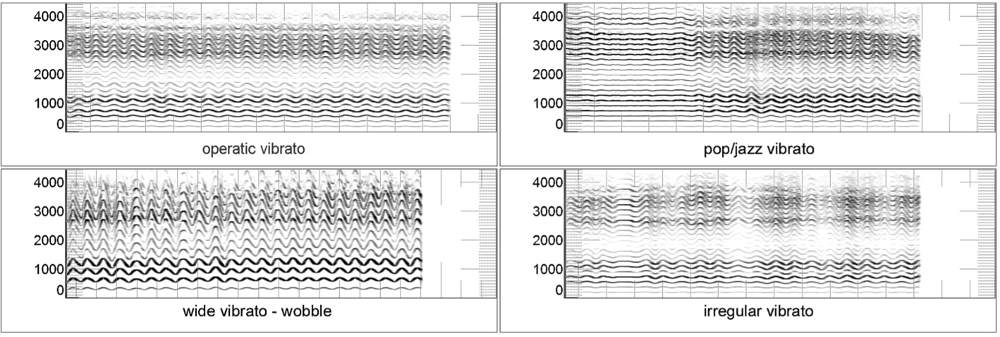
Figure 5-17: Four kinds of vibrato
Media 5/9: Different styles of vibrato
Narrowband spectrograms also allow us to measure the rate and extent of vibrato. This can be a tedious task with some programs, especially when readings must be taken manually. VoceVista, however, provides a special function to automate this process. The program extracts a single harmonic from the spectrum and places it in its own analysis window. Time cursors are used to select a portion of the waveform from which measures of the vibrato rate and extent are calculated (Figure 5-18, 5/10).[6]
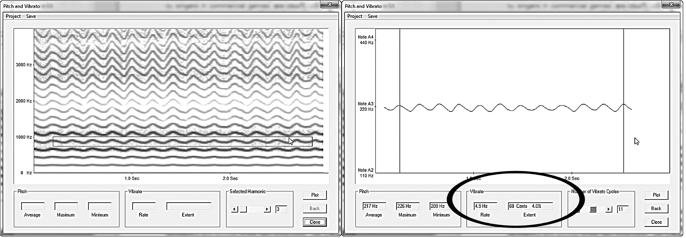
Figure 5-18: Vibrato measurement tool in VoceVista
Media 5/8: Demonstration of vibrato measurement protocol
Visual learners often can quickly correct problems related to vibrato using the spectrogram—sometimes in only a few minutes. Teacher supervision is recommended to ensure students are allowing their natural vibrato to occur and are not manufacturing the sound. Once singers learn the sensations and sounds of the new production, use of the spectrogram should be halted to avoid dependency. In this regard, the spectrogram becomes a trigger; it stimulates new behavior patterns that can continue after the direct feedback is eliminated.
Control of Legato
Legato is visualized in a spectrogram through the continuity of the signal. Non-legato connections are seen as vertical interruptions in the harmonics, which might result from poor vowel/ consonant continuity, from technical issues, such as breath control, or from inattention to the musical line (Figure 5-19, 5/11).
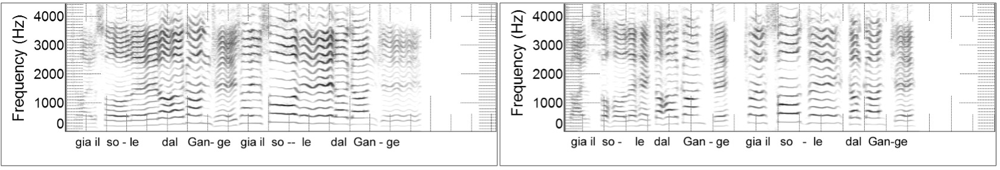
Figure 5-19: Legato (left) and non-legato
Media 5/11: Legato v. non-legato
As with vibrato, realtime spectrographic feedback might help students see things about their legato that they cannot yet hear. Eventually, however, the ear and brain must take over control solely through aural and physical sensations.
Strength and Bandwidth of the Singer’s Formant
The center frequency, bandwidth, and amplitude of the singer’s formant are shown through the intensity of high frequency harmonics (remember—we don’t see the actual formant, we only see how it changes the sound). If Fs is active, a continuous band of energy will be visible somewhere in the range of 2,400--3,200Hz. The singer’s formant occupies a relatively narrow band within this frequency range and is not the same for all voices. For basses, baritones, contraltos, and mezzos, Fs often centers on a lower frequency than for tenors and sopranos (when they are using it). Ideally, we want to see Fs producing uniform amplification across all vowels (Figure 5-20, 5/12). This is a difficult task for some people, especially for the closed/back vowels /u/ and /o/. But the biofeedback provided by spectrography can help singers learn the vowel and support adjustments required to achieve this consistent sound.
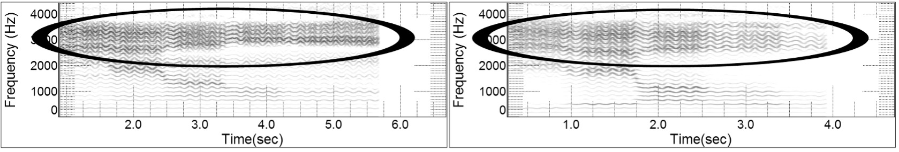
Figure 5-20: Stronger (left) and weaker singer's formants
Media 5/12: Singer's formant visualization with linear predictive coding (LPC)
Excess nasality also can impact the singer’s formant. Rather than tightly clustering F3-F5 within a narrow frequency band, the energy can split into two discreet zones. Because this yields a less desirable sound, I tend to view this type of Fs as the equivalent of a serpent’s split tongue! In most cases, the singer’s formant will reunite into a single band as soon as the flow of air and sound through the nose is cut off by lifting the soft palate.
If the singer’s formant is unusually high, perhaps extending to 4kHz or beyond, there is reason to suspect an elevated larynx. It has been shown that the piriform sinus (or piriform fossa)—the area that surrounds the larynx at the base of the pharynx—has a strong anti-resonance effect that attenuates high frequency harmonics (Dang & Honda, 1995). When the larynx is maintained in a low position and the pharyngeal walls are relaxed, the piriform area becomes an open space that strongly attenuates frequencies above approximately 4kHz. The impact of this anti-resonance is clearly visible in the spectrum of most classical singers through a precipitous falloff in energy (Figure 5-21). But if the larynx is elevated or the pharynx constricted, the piriform space is reduced or even completely closed, which reduces or eliminates its attenuating effect. Strong harmonics now are permitted to continue well beyond 4kHz, possibly ascending to 10kHz or beyond, as often seen in high-larynx belting (see Chapter 10).
Diction and Language
Many singers find diphthongs problematic, often because they are sung differently in different styles of music. In the classical idiom, the first vowel in the pair generally receives the greater importance and longer duration. The opposite can be true in some popular or commercial styles, which creates problems for some singers when they must adapt to the pure vowels of most foreign languages. For example, native speakers of English almost always pronounce the vowel /o/ as the diphthong /ou/ and /e/ as /ei/. Habitual events, such as inappropriate use of diphthongs, can be very difficult for students to hear or feel in their own singing—it is the equivalent of trying to hear your own accent. Visualization through spectrography can increase awareness of such habits, facilitating their correction (Figure 5-22, 5/13).
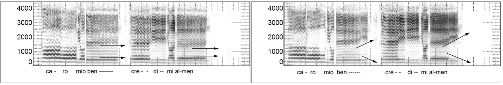
Figure 5-22: Pure vowels (left) v. unintentional diphthongs
Media 5-15: Pure vowels and unintentional diphthongs
Double consonants in Italian pose another chronic problem for developing singers (and even some professionals). In terms of duration, a double consonant is not merely twice as long as a single; the relationship actually approaches ten to one. Because time is displayed in spectrograms, they are ideal tools for displaying the duration of single versus double consonants. As shown in Figure 5-23 (5/14), the difference between the single /n/ of una and the double /n/ of donna and anni is quite obvious (and the difference in meaning between ani and anni is HUGE--if you don't already know, look it up!).
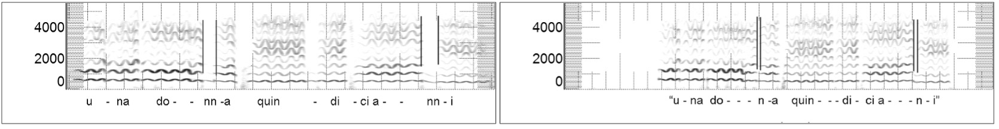
Figure 5-23: Double (left) v. single consonants
Media 5/14: Double and single consonants
Onset/Offset of tone
Spectrograms can reveal significant information about how sounds begin and end. Many singers fall into the habit of sliding up to pitches in a style sometimes called “scooping.” This articulation might be appropriate in some musical styles, but is problematic for others. In this regard, scooping has quite a lot in common with delayed start of vibrato and accidental diphthongs: it easily becomes a habitual part of a singer’s sound. And as we all know, habits—especially bad ones—can be difficult to break. A spectrogram clearly reveals scooping onsets, making it an ideal tool to trigger awareness of the habit (Figure 5-24, 5/15). Remember: correction requires recognition!

Figure 5-24: Scooped (left) and clean onsets
Media 5/15: Scooping up to pitch
Spectrographic feedback also can assist with breathy (aspirate) and hard (glottal) onsets of sound. In the aspirate onset, airflow precedes tone; in the glottal onset, air is pressurized beneath the glottis and explosively released at the instant tone begins. Aspirate onset is visible in the spectrogram as a subtle “fade in” of the sound, often accompanied by a small scoop up to the pitch. Hard onsets display a burst of energy; initial tuning often is sharp, requiring a quick slide down to the intended pitch. Balanced onsets are clean, neither sharp nor flat, and allow vibrato to begin immediately. Offset is visible in much the same manner. An aspirate release—as in a sigh—creates a spectrographic image that fades out, usually accompanied by a drooping pitch. Hard offset is seen as an abrupt spike in energy at the moment sound stops. Balanced offsets split the difference between the other two (Figure 5-25, 5/16).
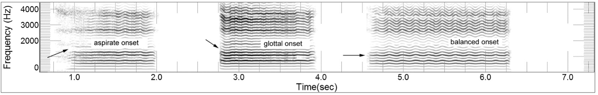
Figure 5-25: Onsets visible in narrowband spectrogram
Media 5/16: Onsets
More Details
When using FFT-based analysis, including power spectrums and spectrograms, the computer operator is likely to be confronted with a baffling array of program setup options. Usually, the wisest choice is to accept the “default” settings offered by the program. Changes, however, might be needed to fine-tune the instrument to specific analysis expectations. Some of these setup parameters are explained below:
Sample Rate
Sample rate controls the total frequency range you can analyze and therefore is an important parameter to verify. The rule is simple: the maximum range of frequencies that can be analyzed is exactly half the sample rate (this is called the Nyquist frequency). At least three options usually exist for sample rate: 11kHz, 22kHz, and 44kHz. 11kHz is sufficient to display the sustained elements of classical singing, which rarely exceed 5,000Hz. 22kHz allows you to visualize fricative and sibilant consonants, along with the very high harmonics often found in belting. 44kHz is the sample rate for CD audio and is sufficient to cover the entire frequency range of healthy human hearing (approximately 0-20kHz). You probably only would use this very high sample rate to compare a live voice with a prerecorded example. Higher sampling rates provide additional information about the sound, but also result in significantly larger file sizes.
Bit Depth
Sample rate indicates the number of individual samples taken per second, each of which contains discreet data. Within each sample there are individual bits of data; bit depth controls the number of bits per sample. Bit depth is the controlling factor in the amplitude range that can be captured. CD audio is sampled at 44kHz with a 16-bit depth, which yields a frequency range to 22kHz and amplitude range of 96dB; DVD audio typically is sampled at 96kHz with a 24-bit depth, yielding a potential range of 48kHz (well beyond the abilities of the human ear) and an amplitude range up to 144dB. An increase of 1 bit raises amplitude range by 6dB. To capture singing for analysis, a bit depth of 8 or 16 should be sufficient. As with sample rate, higher bit rates result in larger file sizes.
FFT Points
FFT points can be thought of as frequency subdivisions within the analysis. An analogy helps understand how this happens. Imagine looking through a window that is covered by wide-louvered blinds. The image you see will be subdivided into segments, each of which is the width of one louver in the blind. The location of objects that are visible through the window could be measured based on the louver through which they are seen. Now, imagine the window is covered by narrow-louvered mini-blinds. The image you see is now subdivided into much smaller segments and the location of objects can be measured more precisely.
FFT points are the “Venetian Blinds” of acoustic analysis. The frequency range will be divided by the number of FFT points to create small segments—like the view between adjacent slats of window blinds. A large number of FFT points will result in small subdivisions (mini-blinds); a low number of FFT points will result in large spectral subdivisions.
The choices available for FFT points will probably follow the same pattern as found with computer memory modules, that is, sequentially doubling from the starting point of the number eight (i.e. 8, 16, 32, 64, 128, etc.). FFT points usually will enter this numerical series at 256 or 512, continuing to as high as 16,384 in some programs. While increasing the number of FFT points improves resolution frequency, it does so at the expense of efficiency. For most voice applications, FFT points higher than 1,024 or 2,048 are superfluous. 512 FFT points will clearly show the location of harmonics. Lower resolutions tend to obscure individual harmonics, but show the locations of formant zones more clearly.
Bandwidth
Bandwidth is an alternate method of determining the number of FFT points. Spectrograms, for example, usually are configured as narrow, middle or wideband. Narrowband spectrograms have a resolution of at least 60Hz, which is sufficient for clear visualization of harmonics. Resolution of wideband spectrograms might exceed 200Hz. At this bandwidth, individual harmonics no longer are visible; however, formant regions can be seen clearly. Bandwidth also impacts the resolution of time in the display. As bandwidth widens, frequency becomes less detailed and time becomes increasingly detailed. At a very wide bandwidth (300Hz and higher), time resolution may be sufficiently detailed to permit visualization of individual opening/closing cycles of the glottis, which appear as vertical striations in the spectrograph image.
Window Length
Some programs allow adjustment of the analysis window duration. A good analogy in this case comes from the frame rate of movies or videos. Faster frame rates allow faster, more realistic-looking motions. In acoustic analysis, shorter window lengths provide greater resolution in the time domain. Time-dependent events, such as vibrato, are therefore most easily visualized with short window lengths (e.g. 10ms or 20ms).
File Formats
Most of the information in this chapter focuses on the analysis of sound that is captured in realtime. It also is possible to analyze prerecorded material, including CD and DVD audio, but only if the original file is in an uncompressed or lossless format. Most people now are familiar with “ripping” files from CDs or downloading digital media directly from the Internet. Media of this type almost always is in a compressed format, such as MP3 or WMA. File compression is a double-edged sword: it dramatically shrinks file size, which is good if you want to keep a lot of music on a small storage device, but does so by eliminating a great deal of important acoustic information. Most analysis programs are unable to open compressed files.
Uncompressed audio files usually are captured either in WAV or AIFF format. High quality compressed (lossless) files are available in formats including m4a, MPEG-4 SLS, and WMA Lossless. Programs to convert audio file formats are readily available for download; care must be taken, however, in format selection. It is possible to down-sample a 44kHz WAV file to 22kHz or lower; the resulting file will be smaller than the original and will no longer contain frequency information beyond 11kHz, but the data that remain are reliable and usable. Up-sampling is an entirely different matter. An analogy with digital images is helpful: a photograph taken at 300dpi resolution can be shrunk to 72dpi for display on a computer monitor with no loss of clarity; but an image enlarged from 72 to 300dpi will appear pixelated and unclear. The same thing happens if you try to up-sample a sound file. Similarly, a lossless format can be converted to a compressed MP3 file, but MP3 cannot be “reconstituted” into its original, lossless format.
Linear Predictive Coding (LPC)
LPC, also sometimes called formant analysis, uses a mathematical algorithm to interpolate vocal tract resonance based on the amplitude and location of harmonics. Like the power spectrum, LPC places data on a two-dimensional graph with amplitude on the Y-axis and frequency on the X-axis (Figure 5-26, 5/17).
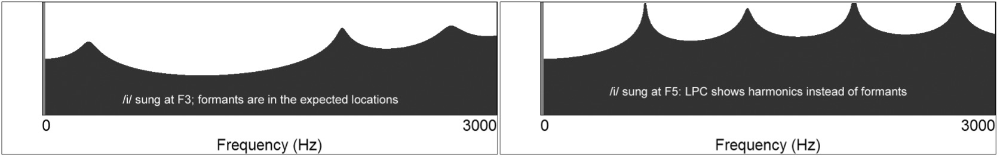
Figure 5-26: LPC of /i/ at F3 and F5
Media 5/17: Series of vowels with LPC estimating formant locations
The result is a reasonable estimate of formant frequencies and bandwidths—provided Fo is at a lower frequency than the expected first formant. As soon as pitch rises above E4 (approximately), LPC accuracy becomes extremely unreliable. This problem occurs because the computer is unable to decipher the difference between Fo and F1. If /i/ is sung at C3, LPC likely will place F1 correctly at about E4. But if pitch rises to C5, all vowels except /a/ will appear to have F1 at that same pitch. By the time pitch exceeds F5, peaks in the LPC signal display harmonics, not formants.
When used within an appropriate frequency range, formant analysis through LPC can help a student maintain vowel integrity over a range of pitches. As a scale is sung, formant peaks might vary in amplitude, but should change very little in frequency. LPC also provides an excellent means to monitor the relationship between F1 and Fs to help develop a balanced, chiaroscuro timbre. For many people, optimal sound is produced when the singer’s formant, which usually is the third peak in the LPC display, is maintained at about the same amplitude as the first formant (Figure 5-27).
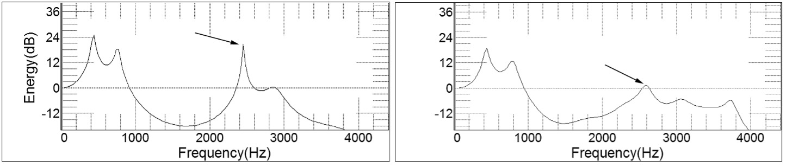
Figure 5-27: LPC showing relationship of F1 to Fs
Vowel Matching
Some of the more advanced analysis programs, including the Sona-Match module in CSL (Kay-Pentax), use LPC analysis to display the accuracy of vowel sounds. A graph is created with F1 on one axis and F2 on the other; the program estimates formant locations in the vocal sound and plots them as a point on this graph (Figure 5-28, 5/18).
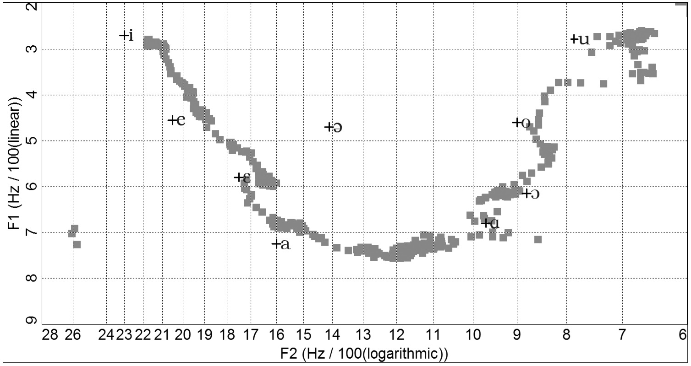
Figure 5-28: Static image from vowel matching program
Media 5/18: Video of vowel matching
Target locations of vowels can be adjusted for differences among men, women and children, and for inter-language variations. It is important to remember to check the program setup in this regard; if a woman sings into a program whose analysis parameters are set for a man, or vice versa, results will be erratic and unreliable.
Vowel matching has its best accuracy when measuring spoken, rather than sung, vowels. This is especially true for women because of the aforementioned problem of Fo rising above the typical location of F1. In singing, closed, back vowels (/o/ and /u/) can be difficult for the computer to identify accurately, especially in voices with a prominent singer’s formant. In these cases, Fs often is mistakenly plotted as F2, skewing the data point to a strange location on the graph. The singer can correct for this by temporarily reducing the ring in his sound.
Perturbation and Noise Factors
Advanced analysis systems are likely to include methods to calculate perturbation and noise factors in the voice, which clinicians and researchers use to help assess a person’s vocal health. They can also be used to objectively quantify change in a voice over a period of time, such as before and after voice therapy.
Perturbation measurements have little value as a teaching tool for singing. Indeed, when sung samples are analyzed, the results are wildly erratic: the most beautiful voice in the world is likely to be labeled as extremely disordered, usually because vibrato is interpreted as a tonal defect related to excess tremor or a high standard deviation of the fundamental frequency.
Some of the more common perturbation measurements are defined below:
Jitter
Jitter is cycle-to-cycle variability in the fundamental frequency, expressed as a percentage. It is a measure of subtle unsteadiness in the vocal tone. Healthy speaking voices usually have a jitter rate under 1%. We do not yet have norms for jitter in the singing voice, so any measures that are taken would have little meaning. It is also possible to define a jitter rate for vibrato as inter-cycle variability; given the much longer period for vibrato than fundamental frequency, acceptable jitter rates likely will be higher than for speech.
Shimmer
Shimmer is cycle-to-cycle variability in amplitude, expressed as a percentage. Healthy speaking voices usually have a shimmer rate under 3%. As with jitter, the measure has little meaning if applied to the singing voice, primarily because of amplitude modulation that occurs within vibrato.
Shimmer also is used as a subjective descriptive term—you might read a review that raves about a soprano’s shimmering tone. Some singers and pedagogues even use shimmer as a synonym or substitute term for vibrato. Using the word in this manner causes no confusion in the artistic world, but could lead to misunderstanding in a therapeutic setting.
Standard deviation of the fundamental frequency
This is a statistical measurement of frequency variability that is used to estimate roughness or coarseness in vocal sound. Measurements over 3Hz generally are considered excessive for speech. As was the case with jitter and shimmer, standard deviation is a meaningless measurement for vocal samples that are sung, not spoken. Vibrato will result in an artificially high measurement that would represent a severe voice defect in speech.
Habitual Fundamental Frequency
Habitual fundamental frequency is an indication of the most frequent fundamental in a recorded sample, which may or may not be different from the average fundamental.
Average (mean) Fundamental Frequency
This is the average frequency sustained during a sample. If the measure is taken for singing, it simply reports pitch. It is more useful for speech, where is can help determine if a singer is speaking at an appropriate pitch level for his or her voice type.
Maximum and Minimum Fundamental Frequency
The highest and lowest fundamental frequencies that are present in the recorded sample.
Amplitude and Fundamental Frequency Tremor
These measurements are indications of long-term periodic variations in either amplitude or pitch, as opposed to the cycle-to-cycle variations measured by shimmer and jitter. For singers, the measurements should correlate with vibrato speed. In speech, significant tremors can be indicative of neurological disorders, such as Parkinson’s disease.
A variety of noise measurements also can be taken, such as harmonics-to-noise, signal-to-noise, and normalized-noise-energy, which are used to assess breathiness and other aperiodic aspects of vocal sound.
Physiologic Measures
Electroglottography
It’s not easy to figure out what the vocal folds are doing during phonation. One option is to look at them directly with a laryngoscope. Two versions of this device are available for use by medical personal: rigid scopes that enter through the mouth, and flexible scopes that are inserted through the nose. Either way, this is a costly, invasive procedure that is better suited to diagnosing pathologies than correcting technical problems in singing. Besides, who can afford to take a student to the clinic every time you’re curious about basic voice function?
Electroglottography (EGG) provides a much more sensible solution. The electroglottograph is an instrument that noninvasively measures vocal fold contact patterns during vibration. Two electrodes are placed on the neck on either side of the larynx (everything is external) and a tiny current is passed from one electrode to the other. Electrical resistance to this signal changes as the glottis opens and closes; plotting the resulting signal on a graph provides a detailed, noninvasive assessment of vocal fold vibration. The procedure is 100% free of risk, and permits unrestricted, normal singing during the collection of data. The information provided by EGG is extremely useful for correcting problems created by insufficient or excess breath pressure, and more importantly, for issues associated with voice registers and registration (see Chapter 10).
The basic EGG signal is shown in Figure 5-29. The top of the analysis window represents the point of maximum glottal closure; maximum opening is at the bottom. Time passes from left to right as in a spectrogram. Three important aspects of vocal fold vibration are revealed through EGG: the rate at which the glottis closes, the rate at which it opens, and the relative duration of the closed and open phases. Opening and closing rates are seen in the slope of the ascending/descending portions of the signal. Open/closed phase duration is expressed through the closed quotient (CQ), which shows the percent of time the glottis is closed during each cycle (the open quotient is the reciprocal of this number).
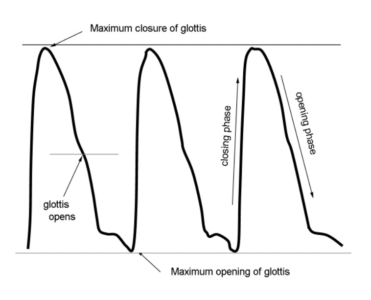
Figure 5-29: The EGG signal
It usually is easy to locate the moment of maximum contact between the vocal folds with EGG by the slight change in slope that often is seen near the top of the signal. Finding the spot where the glottis opens is bit trickier. Opening occurs at some point while the EGG trace is descending. But the only way to know with 100% certainty that you have located this event is to view the vocal folds simultaneously in a laryngoscope. Determining the moment of opening is extremely important, for without that information, it is impossible to measure closed quotient accurately. Fortunately, clues are provided that make laryngeal visualization unnecessary. For less experienced users of the technology, most programs estimate the moment of glottal opening through a default setting that is based on a typical opening point (35% above the bottom of the measurement scale in VoceVista). Using this default setting reduces accuracy, but the measure still is sufficient to show changes within a single subject. As such, it is useful for identifying registration events and for monitoring phonation for insufficient or excess glottal closure that leads to breathy and/or pressed sounds (Figure 5-30A). An alternate, and often more accurate method examines the contour of the opening phase of the signal. Often, there will be a small bend that looks a bit like a knee; there is a good chance this represents the actual moment of opening (Figure 5-30B).
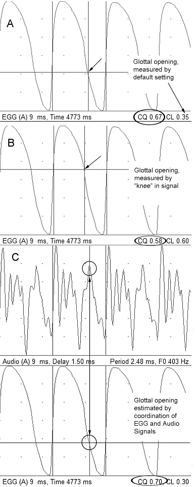
Miller (2008) identifies another potentially important element that can be evident within the EGG signal: the effective closed quotient. Traditional CQ measurements are designed to show the absolute ratio of time the glottis is physically closed versus open; effective CQ shows the acoustic impact of the opening glottis. As the glottis widens, a point is reached where the opening is large enough to alter the acoustic properties of the vocal tract. At this point, the standing wave that results from good resonance is damped. We can see this event by coordinating the EGG and audio signals (Figure 5-30C). Note the fourth major peak in the audio waveform, which is followed by an abrupt attenuation of energy. Effective CQ is derived by aligning this peak/attenuation event with the EGG signal. Because effective CQ is based on an open glottal configuration, it can be significantly larger than traditional CQ measures.
EGG has distinct advantages over laryngoscopy for singers and teachers:
- It is noninvasive, allowing people to sing normally while data are collected.
- Licensure is not required to own or use an EGG, making it accessible to voice teachers, students, researchers, and clinicians.
- It is relatively inexpensive. Lab quality instruments can run into the thousands of dollars, but portable units are available for much less.
- It is relatively simple to use the instrument and to interpret the signals.
Breathing and Airflow
Advanced voice labs are likely to include instruments to assess respiratory function and breath use during singing. We will explore three common uses for this technology: lung capacity, airflow rate, and phonation threshold pressure (PTP).
Lung capacity is measured through a process called spirometry (the instrument that does the measurement is a spirometer). As you will learn in Chapter 7, there are several different capacities that are relevant for breathing. But for singing, we primarily are interested in a person’s vital capacity (VC), which is the amount of air that is expelled during a single exhalation. VC varies widely from person to person and typically is related to physical stature; tall men have a much larger capacity than do petite women. If VC is known, the rate at which breath is expelled during phonation can easily be calculated—you simply divide VC by the maximum duration that a tone can be sustained. For example, if VC is 4 liters and a tone can be held for 40 seconds, the airflow rate is 0.1 liters per second (4÷40); flow rates, however, usually are expressed in milliliters, so 0.1L/sec becomes 100mL/sec. If you know the rate at which air is flowing, you have objective evidence to monitor phonation changes on the breathy-to-pressed continuum.
Airflow rates during artistic singing (not simply sustaining a single tone for as long as possible) are better examined through specialized instruments such as the Phonatory Aerodynamic System (PAS) from Kay-Pentax, and Aeroview from Glottal Enterprises. These devices are able to measure and display airflow in realtime, which makes them particularly useful as pedagogic tools. For example, singers often have airflow-related problems with high notes—this is particularly true for those who overfill with air and subsequently push too hard, blowing out air too quickly and overpowering the voice. Realtime airflow monitoring provides biofeedback to help break this cycle; the student learns to equate reduced airflow with an easier, more beautiful sound. This monitoring also proves helpful in the opposite direction. Singers who habitually produce a tight, pressed tone can learn to release their laryngeal squeeze by gently increasing airflow.
With appropriate hardware and software, it is possible to correlate airflow with acoustic biomechanical parameters in voice production. PAS is able to analyze and display five separate parameters simultaneously: fundamental frequency, amplitude, airflow, phonation threshold pressure, and EGG. Using this multidimensional approach, we can see direct relationships among the various elements. Several specific applications are worth noting:
1. Messa di voce (crescendo/decrescendo). Airflow and amplitude can be monitored simultaneously. Many singers increase and decrease their airflow synchronously with the amplitude change; others maintain constant airflow throughout. A small minority are seen to reduce airflow during the crescendo. None of these options is necessarily better than the other, but if the task is difficult for a singer, one of the alternate approaches might prove more successful (Figure 5-31, 5/19).
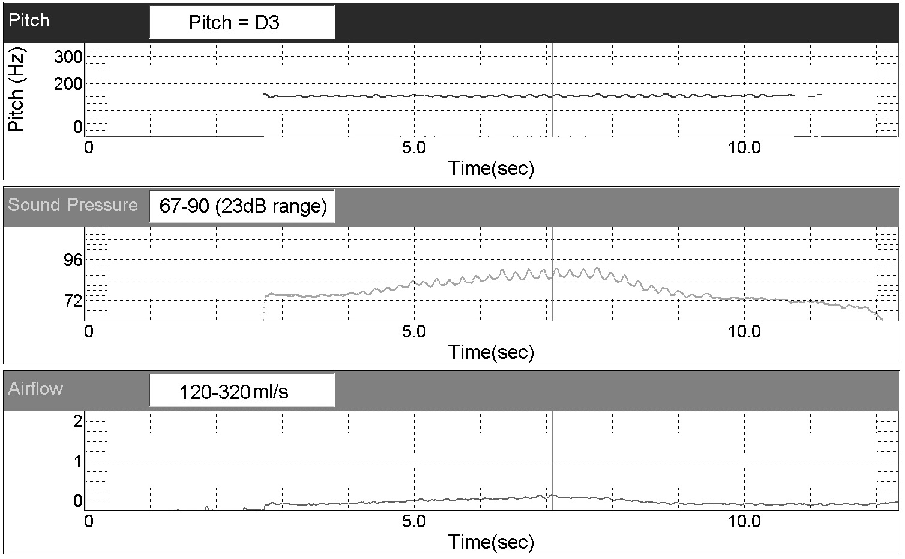
Figure 5-31: Pitch, amplitude, and airflow during messa di voce
Media 5/19: Video of airflow analysis, messa di voce
2. Interval leaps and ascending scales. Many singers reflexively increase amplitude with ascending pitch. By monitoring airflow, amplitude, and pitch, we can see changes in these parameters that occur spontaneously. Often, ascent to higher pitches becomes easier when singers use this feedback to monitor consistent airflow and amplitude (Figure 5-32, 5/20).
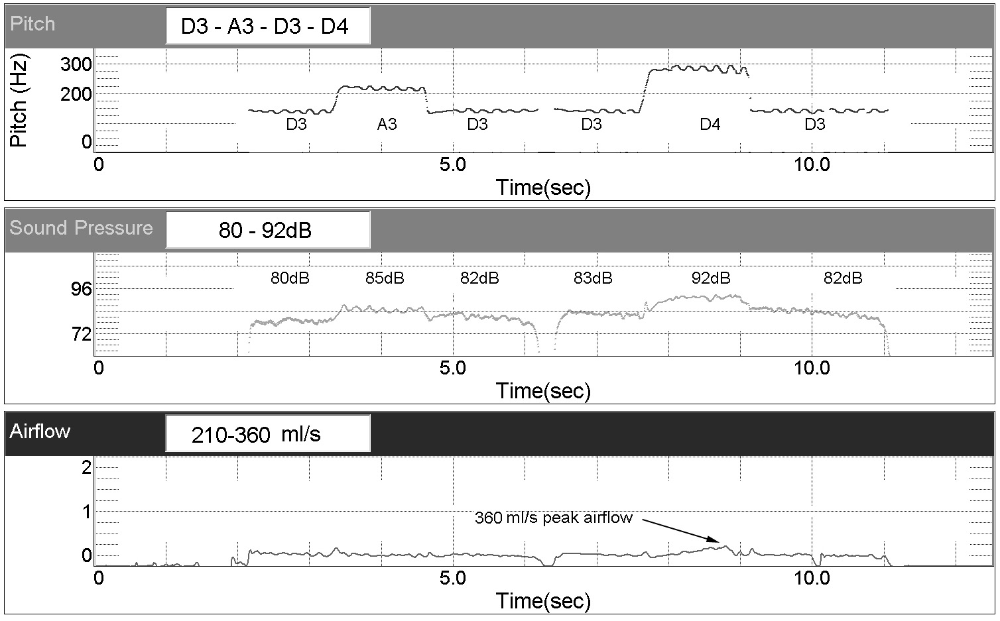
Figure 5-32: Pitch, amplitude, and airflow during leaps of a perfect 5th and octave
Media 5/20: Video of intervallic leaps
3. Sustained vibrato. We’ve already looked at ways to measure the rate and extent of vibrato, and to correlate its frequency and amplitude changes. Airflow measures add yet another dimension. Concurrent visualization of frequency, amplitude, and airflow demonstrate interrelationships among these three parameters. In well-balanced vibrato, modulation of pitch and loudness are synchronous; breath varies in a similar manner, but often increases slightly in advance of frequency and amplitude (Figure 5-33, 5/21).
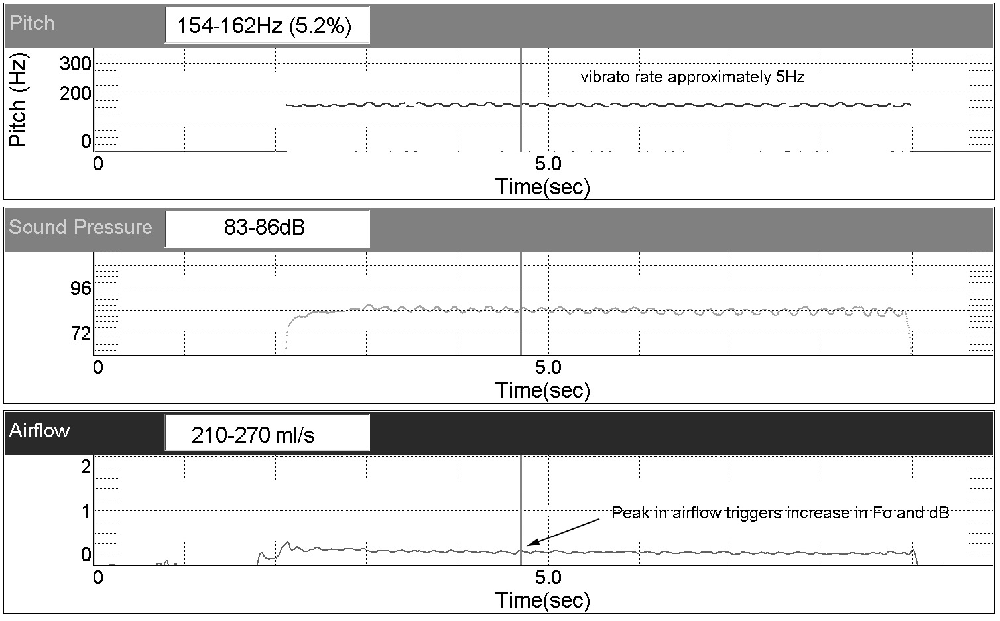
Figure 5-33: Sustained vibrato
Media 5/21: Video of sustained vibrato
4. Vibrato versus non-vibrato singing. Comparing frequency, airflow, and EGG closed quotient reveals the manner in which singers inhibit vibrato. Some squeeze the glottis a bit more tightly, increasing CQ and decreasing airflow. Others do the opposite, releasing the glottis to decrease CQ and increase airflow. A final group maintains consistent CQ and airflow while singing both with and without vibrato. Singers who are required to produce non-vibrato tones and are unable to do so comfortably could use this technology to explore alternative techniques that lead to easier voice production (Figure 5-34, 5/22).

Figure 5-34: Methods to reduce vibrato
Media 5/22: Reducing vibrato
Airflow and subglottal pressure (Psub) are interrelated and often will be inversely proportional (when one goes up, the other goes down). Many aspects of voice production are strongly linked to Psub, including maximum amplitude, ease or difficulty in singing high notes, transitions between voice registers, and basic tone quality. Unfortunately, direct measurement of subglottal pressure during phonation is a difficult and invasive task. In fact, the only way to get a reading that is guaranteed to be accurate is to puncture the trachea and insert a tube connected to a pressure meter (I can’t recommend this procedure for the voice studio). An alternate method measures pressure indirectly through a balloon that is swallowed and partially passed down the esophagus (connections to this balloon exit the body through the mouth or nose). When subglottal pressure rises, the membranous posterior of the trachea bulges against the esophagus, which in turn compresses the esophageal balloon. When properly calibrated, changes in the balloon’s pressure provide excellent estimates of subglottal pressure. Of course, this technique also is ill-suited to the voice studio.[7]
While it currently is difficult to measure subglottal pressure during sustained phonation, noninvasive methods exist to explore PTP, which is the pressure required to initiate phonation. PTP is affected by many factors including hydration, fatigue, pathologies, and the extent to which a voice is “warmed up,” and therefore is useful in research, therapy, and singer training. One end of a small diameter tube is placed inside the mouth; the other end is connected to a pressure transducer. The singer repeats the syllable /pa/, gradually singing more and more quietly. Oral and subglottal pressures are approximately equal at the instant /p/ opens to /a/, providing a reliable estimate of PTP. By repeating the syllable during a diminuendo, the minimum pressure that will initiate phonation can be determined.
Conclusion
As we have seen, science provides a great variety of options for examining the voice, many of which have direct pedagogic application. Feedback provided by spectrograms, formant analysis, electroglottography, and airflow has the potential to help students become better singers. Of equal or perhaps greater importance, information gained from these types of analyses deepens our understanding of voice production. Singers are liberated when they realize why it is so difficult to produce accurate vowel sounds on high pitches, or why /e/ sounds better than /a/ on a given pitch.
You are forbidden to be intimidated by voice analysis technology or the principles of resonance that guide their use. Let’s use a final analogy: word processing. Do you remember when you wrote your first document with a word processor? Those of us with more years behind us than lie ahead remember making the transition from typewriters to computers. But even current students who have never known a time without PCs had to start word processing from scratch. How did you learn to do this? Did you first read the manual from cover to cover, memorizing every capability and command, or did you just start typing and learn how to make formatting changes as the need arose? I’ll wager that every one of us opted for the latter approach. Begin your foray into the world of voice analysis in the same way. Start with a rudimentary spectrogram program and simply play with it. Experiment with it until you begin to see the connection between the sound that comes out of your mouth and the signals that are displayed on the screen. If you are a teacher, become comfortable seeing your own voice before you start to use the technology with your students. Eventually, I hope you will come to accept voice analysis technology as nothing more than an additional component of your teaching toolbox.
Whether we realize it or not, good singing is totally dependent upon acoustics and resonance. Every time we make a subtle vowel adjustment, move our tongue, lift our palate, drop our jaw, change the shape of our lips, and raise or lower our larynx, we change our resonance. Fortunately, we need not rely on intuition and experimentation to achieve optimal resonance. If we understand the laws of acoustics and resonance, we can make informed choices that lead us to more beautiful singing.
______________________
Review Questions
________________________
Footnotes
-
At the time of this writing, computerized voice analysis remains firmly rooted in the PC world. Options for Mac are limited, but increasing. ↑
-
A partial list of notable institutions with significant voice labs includes Oberlin, The Ohio State University, Shenandoah Conservatory, Westminster College of the Arts, University of Kansas, University of Texas-Austin, University of Texas-San Antonio, and the University of North Texas. This list is far from inclusive and additional schools establish labs every year. ↑
-
Use the best A/D converter you can afford. Minimum specifications are: Signal to Noise Ratio of >95db; minimum sampling frequency of 48kHz; dynamic range of >95dB; total harmonic distortion no greater than 0.005%. USB devices with these specifications can be found for less than $200. ↑
-
Use of these programs does not constitute an endorsement. Many other options exist, including freeware, shareware, and commercial products. ↑
-
Spectrogram bandwidth is determined by the number of analysis or data points used. This parameter usually is user adjustable. Narrowband spectrograms typically have a minimum analysis size of 1,024 data points; wideband analysis uses a maximum size of 256 data points. ↑
-
The Multi-Dimensional Voice Profile module of CSL can extract this information, but its measures are calibrated for speech, not singing. At least one build of VoceVista Pro has included the ability to calculate amplitude in vibrato, but that fundtion has not yet been ported to the new VoceVista Video. ↑
-
As of 2012, systems are under development to extrapolate subglottal pressure from intra-oral pressure. If successful, these devices will have direct pedagogic application. ↑